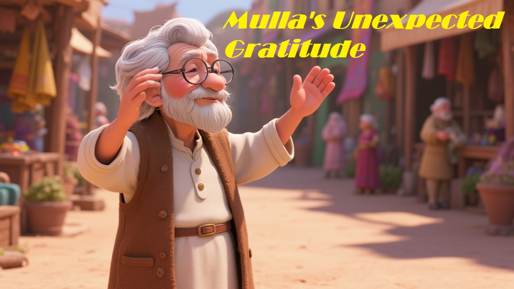

One evening, Mulla Nasruddin was walking home when a thief suddenly jumped out of the shadows and robbed him of his small bag of coins.
The next morning, the villagers were shocked to see Mulla sitting calmly at the tea house, sipping his tea and humming cheerfully.
“Mulla!” someone asked, “Aren’t you upset about being robbed?”
Mulla smiled and replied, “Oh no! In fact, I’m deeply thankful.”
“Thankful? Why on earth?”
He said, “Because I wasn’t carrying all my savings! The thief only got what I had in my pocket. Just imagine if I had taken my whole coin jar!”
Everyone laughed, but also nodded in understanding. Mulla had once again turned a loss into a lesson.
Moral: Gratitude can shift your focus from what’s lost to what remains.
← Back to stories